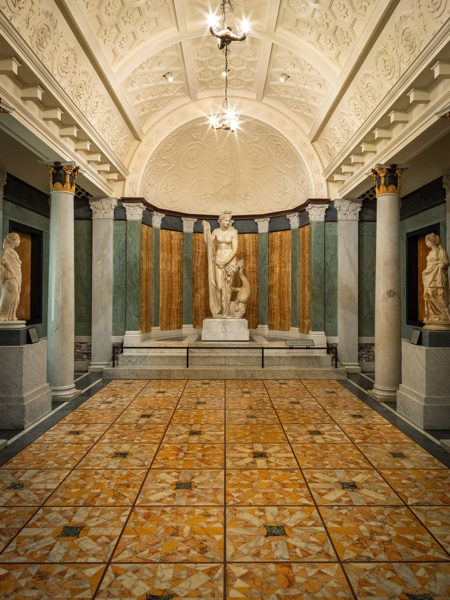

第 14 章
玻璃柜里的光
“照明是陈列的灵魂，它决定了观众看到什么，以及如何去看。”
这句话没有署名。它出现在一份二十世纪中期的博物馆内部备忘录边缘，用铅笔写在一张泛黄的打字稿背面。笔迹潦草，像是会议间隙随手记下的闪念。写下它的人可能是一位策展人，也可能是照明设计师，甚至可能是某个深夜独自走过展厅的馆长。这句话从未被正式发表，也没有进入任何博物馆学的经典文献，但它精确地概括了一种权力——一种被玻璃、距离和光共同执行的权力。
这份备忘录如今保存在某个博物馆档案馆的未编目文件箱里，旁边放着几份展厅照明方案草稿，其中一份标题为“亚洲艺术侧翼——佛教雕塑区照明建议”，日期栏填写的是1978年3月。那一年，大都会艺术博物馆的亚洲艺术侧翼尚未动工，弗利尔美术馆的展厅改造刚刚完成第一期，大英博物馆的东方文物陈列仍沿用战前布局。
但改变已经在发生。二十世纪七十年代是博物馆照明技术剧烈变革的时期——卤素灯开始取代白炽灯，光纤照明从实验室进入展厅，照度计和紫外线过滤膜成为标配。光不再只是“照亮”，它变成了可以量化的参数，可以被设计、被调整、被写入展览方案的技术条款。而正是在这个技术化的过程中，光也无声地承担起了一项解释性功能：它开始替博物馆说话。
走进大都会艺术博物馆的佛罗伦斯与赫伯特·欧文亚洲艺术侧翼，这个感受会在最初的几秒钟内降临。从古埃及厅的过渡通道转进来，光线忽然暗下去——不是黑暗，而是一种有控制的昏暗，地面照度大约维持在五十勒克斯左右，只够看清脚下的路径和旁边观众的轮廓。眼睛需要片刻适应。在这片刻里，周围的一切都在退远。然后，它们出现了。
在展厅中央，一尊北齐时期的石雕佛像立在独立展台上，被一束暖色的顶光从斜上方照亮。光束的边缘很锋利，像舞台追光一样精确地切在佛像的肩部和头部，几乎没有溢散到背景。佛的面容从一千四百年前的石材中浮现出来，眼睑低垂，嘴角微扬，轮廓线在光与阴影的交界处变得异常清晰。衣纹褶皱深陷入暗部，只在转折处被光轻轻擦过，留下一条条细密的亮线。
这种观看体验是强烈的、集中的。它让你在第一时间就“看到”了这尊佛像，但也让你在第一时间就失去了另一些东西：石窟中的漫射光、香火的气味、信众低语的声音，以及那种需要移动身体、变换角度才能逐渐接近的观看过程。这就是博物馆的视觉语法在运作——它不通过文字，而通过光的方向、照度的梯度、玻璃的折射率、展台的高度来组织观众的感知。
大都会的这束顶光来自一盏安装在展厅天花板暗槽内的卤素射灯，色温约三千开尔文，略偏暖，接近日落前一个小时的日光色调。光源位置经过精确计算：如果太低，会在佛像眼窝投下过深的阴影，让面容显得阴郁；如果太高，则会在颧骨下方形成不自然的亮斑，破坏石材表面的质感。四十五度角——这是博物馆照明设计中一个近乎经典的参数，它在塑造立体感的同时，最大程度地避免了眩光和刺目反射。
但这四十五度角并非来自佛教造像的传统观看环境。在响堂山石窟，光线从洞口斜斜漫入，经过岩壁的多次反射后变得柔和均匀，照度随日升日落缓慢变化。在龙门石窟，卢舍那大佛的面容在大部分时段处于半明半暗之中，只有在特定的季节和时辰，阳光才会恰好掠过佛面，形成短暂的“开光”效果——那种光是流动的、不可预测的、带有偶然性的。而博物馆的光是静止的、恒定的、被设计好的。它取消了时间，取消了季节，取消了天气，只留下一个被判定为“最佳”的观看瞬间，并将这个瞬间永久化。
玻璃在这一切中扮演着同样关键的角色。在大都会的这个展厅里，那尊北齐佛像被罩在一个无框架的低反射玻璃展柜中。玻璃的存在几乎是透明的——如果处理得当，观众在正面观看时甚至不会注意到它。但它制造了一个无可争辩的距离。这个距离首先是物理的：观众被挡在距造像表面约八十厘米的位置，任何伸手触摸的冲动都在玻璃面前终止。这个距离也是心理的：玻璃暗示着“不可触碰”，暗示着“珍贵”，暗示着“观看是唯一被允许的行为”。
在寺院或石窟中，信众可以触摸佛像的基座，可以跪在它面前，可以将额头贴在冰冷的石材上。那些行为构成了人与造像之间的身体关系——一种包含触觉、温度、空间接近性的关系。博物馆用玻璃切断了这一切，留下的只有视觉。视觉被孤立出来，被放大，被精炼成唯一的感知通道。而在这个过程中，佛像从身体互动的对象变成了纯粹视觉的对象。
这种转换并非偶然。它根植于现代博物馆的深层逻辑。十九世纪末以来，博物馆逐渐确立了一套关于“正确观看”的规范：保持安静、保持距离、只用眼睛、不触摸展品。这些规范最初是为了保护文物——手汗会腐蚀金属，触摸会磨损彩绘，靠得太近会增加碰撞风险——但它们也同时完成了另一件事：将观众的身体从展品的空间中驱逐出去。
在佛教的原境中，身体是参与宗教实践的必要媒介。礼佛需要合掌、跪拜、绕行、供奉，这些动作定义了人与造像的关系，也定义了造像的身份。当身体被玻璃挡在外面，这些动作全部失效。观众只能站着、看着、然后走开。站立取代了跪拜，凝视取代了礼拜，移动取代了绕行。造像的身份也随之改变：它不再是一个接受供奉的对象，而是一个接受注视的对象。
这种观看关系在不同博物馆中呈现出不同的变体。如果说大都会的亚洲艺术侧翼代表了一种“剧场模式”——通过暗环境和定向光将文物推上舞台——那么大英博物馆的何鸿卿爵士中国与南亚展厅则提供了另一种方案。这个于2017年重新开放的展厅采用了更为明亮的整体照明策略，天花板上的漫射光系统将整个空间维持在一个均匀的中等照度水平。佛像不再被孤立的追光笼罩，而是与周围的陶瓷、玉器、青铜器共享同一种光。背景墙是浅灰色的，展柜是透明玻璃加极简金属框架，地面是浅色橡木。整个空间的语言是克制的、中性的、拒绝戏剧性的。
一尊来自河北的唐代白石菩萨像被安置在这样的环境中。它的轮廓线不再被强烈的明暗对比所强调，而是均匀地呈现在观众面前。你可以清楚地看到衣纹的每一处转折，看到手指的每一个关节，看到颈项上细微的雕刻痕迹。但这种清晰是另一种意义上的清晰——它不是宗教体验的清晰，而是艺术鉴赏的清晰。它邀请你仔细观察，而不是沉浸感受。
这就是所谓的“白盒子”模式。这个术语最初用来描述现代艺术博物馆的中性展示空间——白墙、均匀光、无装饰。当它被应用于佛教艺术时，产生的效果是双重的。一方面，它确实去除了干扰，让观众能够专注于文物的形式和细节。另一方面，它也将佛教造像从任何可能暗示其宗教功能的空间语境中剥离出来，使其成为一件“纯雕塑”。在白盒子中，一尊佛像与一件亨利·摩尔的抽象雕塑共享同样的展示逻辑：它们都是三维造型，都需要充足的光线来呈现体积，都需要中性的背景来避免视觉干扰。
这种展示策略的背后是一种特定的艺术史观念——它相信形式的价值是普遍的、跨越文化的、可以脱离原境而被欣赏的。一尊唐代菩萨像的美，在这种观念下，不在于它曾经接受过多少信众的祈祷，而在于它的比例、线条、材质感和雕刻技艺。博物馆通过光与空间的设计，将这种观念转化为观众的身体经验：你走进这个明亮的、中性的空间，你看到一件造型优美的雕塑，你欣赏它，然后你走向下一个展柜。整个过程是安静的、理性的、审美的。
这两种模式——剧场模式与白盒子模式——之间的张力，贯穿了二十世纪下半叶以来博物馆展示亚洲佛教艺术的历史。它们不是简单的风格差异，而是对佛教艺术本质的两种竞争性定义。剧场模式倾向于强调佛教艺术的宗教性与空间属性，试图通过控制光线和营造氛围，在博物馆内重建某种近似于石窟或寺院的观看体验。支持这种策略的策展人通常会论证：佛像不是孤立的美学对象，它们是在特定空间中被观看的，光线、距离、环境声都是观看体验的组成部分。如果博物馆想要“尊重”文物的原境，就必须在展示设计中考虑这些因素。
而白盒子模式则倾向于强调佛教艺术的形式美感与艺术价值。它的支持者会反驳：任何试图在博物馆内“重建”原境的做法都是徒劳的，而且是不诚实的。一个纽约的地下室不可能变成龙门的崖壁，伦敦的展厅也无法重现敦煌的气候。与其制造一种虚假的沉浸感，不如诚实地承认博物馆的现代性，将文物作为艺术品来呈现，让观众以自己的方式去欣赏。
这两种立场都有其合理性，也都隐藏着自身的问题。剧场模式的问题在于：它所模拟的“原境”究竟是什么？是哪一个历史时期的原境？是哪一种观看条件的原境？
响堂山石窟在六世纪刚刚开凿时，佛像表面覆有鲜艳的彩绘和金箔，在油灯和火炬的照耀下闪烁着完全不同于今日石材裸露后的效果。到了十二世纪，彩绘剥落，金箔被刮去，洞窟内的视觉经验已经截然不同。再到二十世纪初，当卢芹斋的代理人第一次进入这些洞窟时，它们已是半荒废状态，地面堆积着碎石和鸟粪，光线从残破的洞口不规则地射入。哪一种状态算“原境”？
博物馆选择模拟的，往往是经过浪漫化想象的原境——一种将时间压缩、将破坏抹去、将偶然性排除的理想化版本。大都会那个展厅的昏暗氛围，与其说是在模拟真实的石窟，不如说是在模拟一种关于石窟的现代想象：幽深、神秘、静穆、永恒。这种想象本身是十九世纪浪漫主义以来“崇高”美学的产物，它与亚洲佛教寺院或石窟的实际视觉经验可能相去甚远。
白盒子模式的问题则是另一种。当一尊佛像被安置在中性背景和均匀光线下时，它确实获得了某种“纯粹”的视觉呈现，但这种纯粹是有代价的。它剥离了佛像身上所有不属于“形式”的信息——香火的痕迹、信众触摸留下的磨损、历代重修叠加的涂层，以及在特定空间中与其它造像、壁画、建筑构件的关系。这些信息在白盒子中被视为“干扰”，被中性背景所吞噬。
但它们是佛像历史的一部分，是它作为宗教物存在的物质证据。当博物馆将这些信息视为需要被“清理”或“淡化”的东西时，它实际上是在执行一种选择：什么值得被看见，什么不值得。这种选择本身就是一种解释行为，但它被空间设计的“中性”表象所掩盖。
观众走进一个明亮的白色展厅，看到一尊被均匀照亮的佛像，他们可能不会意识到，这种“清晰”和“纯粹”本身就是一种高度建构的观看方式。
柏林亚洲艺术博物馆的佛教艺术展厅提供了一个有趣的中间案例。这个博物馆继承了二十世纪初德国吐鲁番考察队从柏孜克里克千佛洞（有“美丽装饰之所”之意，位于新疆吐鲁番市木头沟，始凿于麴氏高昌时期，高昌回鹘时期成为王室寺院）切割带回的大量壁画残片。这些残片在二战中经历了严重的损毁——1945年盟军轰炸柏林时，博物馆建筑被直接命中，部分壁画在火焰和冲击波中碎裂。
战后，幸存的部分被重新安装，但安装的方式几经变化。在1990年代之前，这些壁画残片被镶嵌在仿制的洞窟形壁面上，试图还原它们在柏孜克里克时的空间关系。这是一种典型的剧场模式。
但1990年代的一次重新布展改变了策略。新的设计不再试图模拟洞窟，而是将壁画残片作为“碎片”来展示——每一块被装裱在独立的展板上，配以档案照片和切割过程的说明文字。光线是明亮的、均匀的、文献式的。
这种转变背后的逻辑很清晰：既然这些壁画已经不可挽回地失去了它们的原境，既然它们的存在本身就是切割和流散的结果，那么博物馆与其制造一种虚假的完整，不如诚实地展示它们的碎片状态。这是一种具有自我反思意识的展示策略，它超越了剧场与白盒子的二元对立。但它仍然无法回避一个根本问题：当这些壁画被作为“碎片”来展示时，观众是在观看佛教艺术，还是在观看一种关于佛教艺术被破坏、被流散的历史？这两种观看的目标是不同的，它们所建构的知识也是不同的。
这个问题将我们引向更深的层次。博物馆对展示策略的选择，并非仅仅是美学或教育理念的问题。它背后是一整套制度逻辑在运作。这套逻辑包括：博物馆的分类体系如何将“亚洲艺术”建构为一个学科范畴；博物馆的教育使命如何预设了观众需要从文物中获得什么；以及博物馆作为公共机构的身份如何要求它将宗教物转化为可公开展示的文化遗产。
分类体系是其中的关键环节。在大多数欧美博物馆中，中国佛教造像被归入“亚洲艺术”部门，而非“宗教文物”部门。这个分类决定了它们将与谁并列展示——不是与基督教圣像或伊斯兰书法，而是与日本屏风、印度细密画、韩国陶瓷。这种并置将“佛教”的身份弱化，将“亚洲”和“艺术”的身份强化。当观众走过一个展厅，看到一尊中国佛像旁边是一幅日本浮世绘、再过去是一件泰国青铜器时，他们接收到的信息不是“这些是不同宗教的圣物”，而是“这些是来自亚洲的艺术品”。“亚洲艺术”作为一个范畴，正是在这种空间并置中被具体化、被自然化。它不是一个自然存在的实体，而是博物馆通过分类、收集和展示所创造出来的知识对象。
教育使命则从另一端施加压力。博物馆的策展人需要面对一个基本问题：大多数观众对亚洲佛教的历史、教义、仪轨知之甚少。他们走进展厅时，携带的是一套来自西方艺术史的观看习惯——他们知道如何欣赏一件雕塑的造型，如何评价一件绘画的构图，但他们可能完全不了解“手印”的含义，不知道“三十二相”的规范，也不理解一尊菩萨像在寺院空间中的具体功能。面对这样的观众，博物馆必须做出选择：是提供足够的宗教背景信息，冒着将展厅变成教科书的危险；还是将佛像作为艺术品来展示，让观众以他们已经掌握的审美能力去接近它？
大多数博物馆选择了后者，因为这个选择与“亚洲艺术”的分类体系一致，与博物馆作为审美教育机构的自我定位一致，也与观众已有的期待一致。观众来到博物馆，期待看到“美”的东西。博物馆满足了这种期待。
光从四十五度角打来，照亮佛的面容。观众在玻璃前驻足片刻，点点头，走向下一个展柜。
但在这种顺畅的观看关系中，有某种东西被遗漏了。被遗漏的不是信息——信息可以通过标签和导览来补充。被遗漏的是一种身体性的理解。
在寺院中，信众对佛像的理解不是通过阅读标签获得的，而是通过身体的动作：跪拜时视线的高度、合掌时手指的位置、绕行时脚步的节奏。这些动作将佛像纳入一个身体的空间坐标系，使信众在物理关系中感知到佛像的“在场”。
博物馆无法复制这种身体关系，因为博物馆的空间规则——站立、行走、保持距离——本身就是对宗教身体实践的否定。这不是任何策展人的错误，而是博物馆作为一个现代世俗机构的制度性限制。
博物馆的诞生，本身就是宗教物从仪式空间转移到公共展示空间的过程。这个过程必然伴随着仪式行为的终止和观看行为的开始。玻璃柜是这个过程的物质象征。它既保护了文物，也完成了转换。
回到大都会的那尊北齐佛像。在它所在的展厅里，照明设计图上的标注精确到了每一盏灯的角度和每一块玻璃的透光率。这份设计图是某个策展团队数年工作的成果，它经过了预算审批、文物保护部门的审核、建筑师的结构计算，以及无数次现场调试。它是一份专业文件，凝聚着大量的专业知识和严谨的技术判断。
但它也是一份解释文件。它在无声地告诉每一个走进展厅的观众：你应该从这个角度看它；你应该注意它的面容，而不是它的背部；你应该把它当作一件雕塑来欣赏，而不是一个神灵来礼拜；你应该在它面前停留大约三十秒，然后继续向前。
这些指令没有被写出来，但它们被光、玻璃和空间忠实地执行着。观众服从这些指令，通常甚至没有意识到自己在服从。这正是这种视觉语法最有效的地方——它不需要被言说，就能被遵守。
在柏林的亚洲艺术博物馆，有一块来自柏孜克里克千佛洞的壁画残片，展示在一个独立的玻璃展柜中。展柜的背景是深灰色的，光线从上方垂直落下，照度被严格控制在五十勒克斯以内——这是有机材料所能承受的安全上限。壁画残片大约四十厘米见方，上面残留着一个供养人的半身像。他的面容已经模糊，只能辨认出轮廓和衣纹的大致走向。在展柜旁边，一块小标签用德语和英语写着：公元九至十世纪，柏孜克里克千佛洞，彩绘泥层，德国吐鲁番考察队收集，1904-1905年。
标签上简单的记录掩盖了更复杂的历史：19世纪末以来，俄国、德国、英国、日本探险队先后对柏孜克里克千佛洞进行探查并割取壁画。标签没有提到这面墙是如何被切割的，没有提到锯条留下的痕迹，没有提到1945年的轰炸，也没有提到那些在轰炸中永久消失的、与这块残片原本相连的部分。这些信息不在标签上，它们在档案里，在学术论文里，在那些不会进入展厅的知识领域里。
观众看到的是一个被精心照亮的碎片，它安静地悬浮在深灰色背景上，像一个被装裱在丝绒上的宝石。光让它的每一处细节都清晰可见。光也让它从一切历史的具体性中脱离出来，成为一件纯粹的视觉对象。
这种脱离正是博物馆展示的核心效果。它通过空间设计将文物从历史中“救出”，同时又将它们置入一种新的历史——博物馆自身的历史。在展厅里，一尊佛像的时间不再是它被雕刻的六世纪，也不是它被崇拜的十世纪，也不是它被凿下盗运的二十世纪初。它的时间是“现在”——一个被玻璃和光所凝固的永恒的现在。在这个现在中，一切历史的暴力、信仰的虔诚、流散的痛苦都被悬置了。剩下的只有形式、材质和美感。观众站在玻璃前，看到的是美。他们可能被感动，也可能只是匆匆一瞥。
但无论哪种反应，都发生在博物馆所设定的观看条件之内。这些条件不是中立的，它们携带着特定的文化假设和制度逻辑，但它们被呈现为中立的，被呈现为“最好的观看方式”。
有一个细节值得注意。在大英博物馆何鸿卿爵士展厅的唐代菩萨像前，地面的橡木地板上有两条几乎看不见的磨损痕迹。它们大约相距四十厘米，与人的肩宽相当。
这两条痕迹不是任何设计师有意为之，而是数百万观众在玻璃柜前驻足时，双脚反复踩踏同一位置所造成的地板表面微磨损。这是一个无意识的、集体的身体行为所留下的物质证据。它标记出了“正确的观看位置”——那个能够看到最佳角度、能够读完标签、能够在不被其他人遮挡的情况下完整观看造像的位置。观众不需要任何指示牌，就会自动找到这个位置。他们走到玻璃前，停在那两条磨损线之间，看一会儿，然后走开。下一个观众走上来，停在同样的位置。
这个位置不是偶然形成的，它是展柜高度、标签位置、光线方向和人体工程学共同作用的结果。在这个锚点上，每一个个体观众的身体都被纳入了一种标准化的观看模式。他们可能有着不同的文化背景、不同的知识准备、不同的观看目的，但他们的身体被引导到了同一个位置，他们的视线被引导到了同一个角度。这种身体经验的标准化，是博物馆将文物转化为展品的关键机制。
与这种标准化相对照的，是石窟和寺院中观看经验的多样性。在响堂山，一个六世纪的信众可能跪在佛像前，从下方仰视佛面；一个十世纪的文人在同一尊佛像前，可能站在数米之外，以平视的角度观察衣纹的线条；一个二十世纪初的盗凿者在同一尊佛像前，可能手持电筒，从侧面照射佛首的颈部，评估石材的厚度和凿入的角度。这三种观看方式对应着三种完全不同的关系：信仰的、审美的、掠夺的。它们在同一空间中并存，但各自看到的是不同的对象。
博物馆的标准化观看取消了这种多样性。它只保留了一种关系——审美的——并将其强加给所有观众。这不是阴谋，而是制度运作的自然结果。
博物馆需要管理大量观众的流动，需要保护脆弱的文物，需要传达清晰的教育信息。标准化是实现这些目标的最高效手段。但它也在无意中完成了另一件事：它将观众训练成了一种特定的观看者——那种能够在三十秒内完成对一件文物的视觉消费、然后礼貌地移向下一个展柜的观看者。
这种训练的效果可以从观众的行为中观察到。在任何一个大型博物馆的亚洲艺术展厅里，观众在单件文物前的平均停留时间是十五到四十秒。他们先看整体，再看标签，再回头看一眼，然后离开。很少有人会绕到侧面或背面——如果展柜允许的话。更少有人会在同一件文物前停留超过两分钟。这种行为模式不是观众自身的缺陷，而是展示设计所暗示的节奏。光线的聚焦引导注意力快速集中，标签的简洁鼓励快速阅读，展柜的排列暗示着线性推进的参观路径。整个空间在说：看这里，然后看下一个。
这种节奏与寺院中的时间经验完全不同。在寺院中，信众可能在一尊佛像前停留很长时间——跪拜、默祷、绕行、静坐。时间不是被管理的，而是被沉浸的。博物馆无法提供这种沉浸，因为博物馆的时间是公共的、共享的、需要协调众多观众流动的时间。一个观众在一件文物前停留过久，会阻碍其他人的观看。空间设计必须考虑这种流动性。玻璃柜之间的距离、通道的宽度、休息座椅的位置——这些都是对观众流动的管理。在这种管理中，沉思被压缩到了三十秒以内。
那么，那些试图“模拟原境”的展示策略，究竟在模拟什么？它们模拟的不是原境本身，而是原境在特定文化想象中的投影。当大都会的策展人将那个展厅的光线调暗，在佛像上方投下暖色顶光时，他们调用的是一套关于“东方宗教空间”的视觉符号——幽暗、静谧、神秘、超越。
这套符号的来源不是任何一座具体的中国石窟，而是十九世纪以来欧洲对“东方”的想象性建构。从浪漫主义绘画中的东方场景，到早期探险家带回的洞窟素描，再到二十世纪初世界博览会上“东方村落”的模拟展示，这套视觉符号已经沉淀为一种文化惯例。博物馆的剧场模式展示，是这种文化惯例的延续。它不是在还原佛教空间，而是在还原一种关于佛教空间的西方想象。
这个判断可能过于严厉，但它指向一个不可回避的问题：当博物馆声称通过空间设计“尊重”文物原境时，它究竟尊重的是什么？是文物在原境中的实际视觉经验，还是博物馆自身对那种经验的浪漫化投射？
白盒子模式在这一点上更诚实，但它的诚实也有代价。它承认博物馆无法重建原境，承认任何模拟都是虚构，因此选择将文物呈现为“纯粹”的艺术品。但这种纯粹本身也是一种虚构。
一尊佛像从来就不是纯粹的艺术品。在它被创造的时代，“艺术”这个范畴甚至不存在。它是宗教器物、是供养对象、是社区凝聚的焦点、是政治权威的象征。将它定义为“艺术品”，是现代西方美学体系施加的分类。白盒子模式通过空间设计将这个分类自然化，使观众在接受它时毫无察觉。
当一尊佛像被放置在与希腊雕塑相同的展示条件下——同样的中性背景、同样的均匀光线、同样的玻璃展柜——它就被无声地纳入了“雕塑”的范畴。观众以欣赏雕塑的方式欣赏它，以评价雕塑的标准评价它。这种范畴转换是博物馆解释权最精微的运作。它不需要在标签上写“这是一件艺术品”。光、玻璃和空间已经替它说了。
在华盛顿的弗利尔美术馆，一尊来自响堂山石窟的北齐佛首被展示在一个小型独立展厅中。展厅的墙面是深蓝色的，接近暮色将尽时的天光。佛首被安置在一个齐胸高的圆柱形展台上，周围没有任何其他文物。一盏隐藏在天花板内的射灯从正上方打下，光斑刚好覆盖佛首的整个面部，在颈部的断裂面处戛然而止。断裂面的粗糙肌理在光的斜射下清晰可见——那是1930年代盗凿留下的痕迹，凿刃的每一次冲击都在石头上留下了方向性的裂纹。但光没有停留在断裂面上。它向上聚集在佛的面容上，将观众的视线从暴力的痕迹引向美的呈现。
这个设计是精心的、有效的。它让观众首先看到佛的宁静与庄严，然后才注意到——如果他们愿意注意的话——佛首是被暴力切割下来的。美的体验先于历史的认知。审美判断先于伦理判断。这正是博物馆视觉语法的精妙之处：它不否认历史，但它让历史服从于美学。
弗利尔美术馆的这份展示方案经过多次修改。在早期的方案中，佛首曾被计划安置在一个仿制的石窟壁龛中，周围配以从同一石窟切割下的其他构件。这个方案最终被放弃了。原因之一是文物保护部门对微环境控制的担忧——壁龛结构可能阻碍空气流通，造成局部湿度积聚。原因之二是策展团队内部的意见分歧。一位策展人在备忘录中写道：“我们不是在建造迪士尼乐园的‘石窟之旅’。”这句话被记录在会议纪要中，旁边没有进一步的解释。但它表明，至少有一部分博物馆专业人员意识到了模拟原境的内在问题——它可能滑向主题公园式的景观制造，将宗教空间变成娱乐体验。
这种意识推动了另一种展示方向的探索：不是模拟原境，而是呈现“脱离原境”这一事实本身。佛首被单独展示，断裂面不被遮掩，切割的痕迹保持在可见状态。这种展示策略试图在美学与历史之间找到平衡：既不让历史的暴力压倒美的体验，也不让美的沉浸抹去历史的真实。
但平衡是脆弱的。在同一个展厅里，观众的反应呈现出明显的分化。有些人站在佛首前，被面容的宁静所吸引，久久不愿离开。他们在留言簿上写下“美得令人窒息”、“灵魂被触动”之类的词语。另一些人则注意到断裂面的粗糙，注意到标签上“从响堂山石窟切割”的措辞，开始追问这尊佛首的来源。他们在留言簿上写下“它应该被归还”、“这是掠夺的证据”。
两种反应发生在同一个空间里，面对着同一件文物，但它们看到的是不同的对象：前者看到的是被光所塑造的美学对象，后者看到的是被标签所提示的历史对象。博物馆的展示设计无法同时满足这两种观看。它必须做出选择，或者在不同层次上同时容纳它们。
弗利尔的选择是让光主导第一印象，让标签提供后续信息。这是一个时间性的策略：先让观众感受美，再让他们了解历史。但在这个时间序列中，美已经占据了优先地位。当观众读到标签上的切割历史时，他们已经完成了对佛首的审美体验。历史信息成为附加物，而不是核心。这种时间序列不是偶然的。它反映了博物馆对自身使命的基本理解：博物馆首先是审美教育的场所，其次才是历史教育的场所。这个排序可以追溯到十九世纪博物馆制度形成时期。当时的博物馆将自己定义为“美的殿堂”，其任务是提升公众的审美趣味，培养公民的美德。历史信息的提供是辅助性的，是为了帮助观众更好地理解和欣赏美。
这种排序在今天仍然深植于大多数博物馆的制度基因中。它解释了为什么照明设计在展示方案中占据如此优先的地位——光直接塑造美感，而标签只能传达信息。它也解释了为什么策展人会在备忘录中本能地反对“石窟之旅”——因为那会将博物馆从审美教育的层面拉低到娱乐体验的层面，背离了博物馆的制度尊严。
但这种制度尊严本身是有文化立场的。它将一种特定的审美标准——源于欧洲文艺复兴以来形成的艺术鉴赏传统——作为普遍的观看方式。当中国佛教造像被纳入这种观看方式时，它们被迫进入了一个并非为它们设计的评价体系。在这个体系中，形式优于功能，造型优于仪轨，艺术家的个人创造优于工匠的集体传承。
一尊唐代菩萨像被赞扬，不是因为它在寺院中有效地承载了信众的祈愿，而是因为它的线条流畅、比例和谐、面容慈悲。这些审美标准本身不是普遍真理，而是特定文化传统的产物。
当博物馆通过光与空间将这些标准自然化时，它执行的是一种文化解释权的转移：评判佛教造像的标准，从佛教自身的仪轨传统，转向了西方美学的形式分析传统。这种转移的后果是深远的。它不仅改变了文物被观看的方式，也改变了它们被研究、被出版、被市场估值的方式。
在拍卖图录中，一尊佛像的价值主要由其年代、尺寸、品相和“艺术品质”决定。这些标准与博物馆的展示逻辑一脉相承。它们共同建构了一个全球性的“亚洲艺术”市场，在这个市场中，佛教造像被当作可收藏的艺术品来流通。
市场反过来又影响了博物馆的收藏策略和展示策略。当一尊佛像被以数百万美元的价格拍卖时，它在博物馆展厅中的展示也必须证明这个价格——它必须被呈现为一件“杰作”，而不是一件普通的宗教器物。

光从四十五度角打来，玻璃将它隔离在神圣的距离之外，背景的色调衬托出它的稀有与珍贵。整个空间在说：这是值得你专程来看的东西。这是“亚洲艺术”的精华。
但“精华”是一个选择性的概念。它意味着某些东西被纳入，某些东西被排除。在博物馆的展厅里，被纳入的是那些造型精美、保存完好、符合形式美标准的造像。被排除的是那些残损严重、工艺粗糙、在审美上“不达标”的文物。这种排除不是物理上的——那些不被展示的文物通常存放在库房中，只有研究者才能看到——但它是可见性的排除。对于普通观众而言，博物馆所展示的就是“亚洲佛教艺术”的全部。
他们看不到库房里那些断裂的基座、剥落的彩绘残片、无法辨认形象的碎块。他们看到的是一系列经过精心挑选的“代表作”。这种选择本身就是一种解释：它定义了什么是重要的、什么是值得被看见的。而光、玻璃与空间将这个定义转化为视觉经验，使观众在接受它时毫无察觉。
在柏林的亚洲艺术博物馆，有一间不对普通观众开放的库房。库房里存放着那些无法展示的壁画残片——有些太小，有些太碎，有些颜色已经褪到几乎看不见。这些残片原本属于柏孜克里克千佛洞超过1200平方米的壁画总面积的一部分，但流散与破坏使它们只能以碎片形式存在。它们被平放在无酸的纸盒中，每一片都编了号，号码对应着档案中的记录。
偶尔有研究者申请调阅，管理员会戴上白手套，从纸盒中取出残片，放在工作台上，打开台灯。台灯的光是白的、冷的、均匀的，没有任何戏剧性。在这种光线下，残片显示的不是美，而是脆弱。彩绘层上的裂纹、泥层边缘的剥落，以及勒柯克的锯条留在背面的平行划痕——这些细节在均匀光下毫无遮掩地呈现出来。
研究者俯身靠近，用放大镜观察，在本子上记录。这是一种完全不同于展厅的观看方式。它不追求美的体验，不制造沉浸感，不引导视线。它只提供信息。
但这种观看方式不被公众所知。公众看到的只是展厅里那些被精心照亮的“精华”。库房里的碎片不属于“亚洲艺术”，它们属于档案。
这个区分——展厅与库房、精华与碎片、可见与不可见——是博物馆解释权运作的又一个层面。它决定了哪些文物进入公众视野，哪些留在专业领域。它也决定了公众对“中国佛教艺术”的认知边界。当一代又一代的观众在展厅中看到那些被顶光照亮的佛像时，他们形成的认知是：中国佛教艺术是精美的、庄严的、完整的。
他们不知道那些残片的存在，不知道切割过程中的暴力，不知道二战轰炸造成的损失，也不知道修复干预本身会成为需要被修复的历史层。这些知识被限制在专业领域内，不进入公众的审美体验。博物馆的空间设计维持着这种区隔。展厅的光是温暖的、塑造性的；库房的光是冷的、揭示性的。两种光，两种观看，两种知识。但它们之间没有通道。
这种区隔不是任何个人的决定。它是博物馆制度长期演化的结果。十九世纪末以来，博物馆逐渐分化为两个空间领域：公共展厅和学术库房。公共展厅承担教育、展示、提升公众品味的职能；学术库房承担收藏、研究、保存的职能。
两个领域有不同的人员、不同的规则、不同的空间设计。策展人在两个领域之间工作，但他们的大部分精力投入在公共展厅上——因为那是博物馆面向社会的面孔，是资金申请的证明，是公众评价的依据。库房是后台，展厅是前台。这种前后台的划分，使得博物馆能够同时维持两种不同的真实性：在展厅中，文物被呈现为美的载体；在库房中，文物被处理为历史的证据。
两种真实性并不矛盾，但它们适用于不同的观众。普通观众获得的是审美真实性，研究者获得的是历史真实性。博物馆通过空间设计管理着这两种真实性的分配。
回到大都会那尊北齐佛像。在它所在的展厅里，观众来了又走。有些人会在玻璃前停留超过一分钟，但那是少数。大多数人在三十秒内完成观看：走近，看一眼，低头读标签，再抬头看一眼，然后转身。在这三十秒里，光从四十五度角持续打下，玻璃将距离精确地维持在八十厘米，背景的深灰色吸收了所有溢散的光线。佛像的面容在光中静止不动，眼睑低垂，嘴角微扬。它已经这样被观看了几十年。
在这几十年里，展厅的照明系统升级过两次——从卤素灯换成LED，色温从三千开尔文微调到两千七百开尔文，紫外线过滤膜的更换周期从五年缩短到三年。每一次技术升级都经过专业论证，都有文物保护科学的依据，都旨在为文物提供更安全的展示环境。
但这些技术决策也在持续地重塑着观看的条件。LED的光谱分布不同于卤素灯，它会使石材表面的某些矿物颗粒呈现出略微不同的色调。色温的微调会影响观众对“暖度”的感知。紫外线过滤膜的更换改变了玻璃的折射率。这些变化是微小的、累积的、在每一次单独升级中几乎无法察觉的。
但经过几十年的累积，今天观众看到的佛像，与1970年代观众看到的佛像，在视觉上已经有所不同。这种不同不是文物本身的改变——文物被保护得很好。这种不同是观看条件的改变，是视觉语法的缓慢演进。
这种演进没有终点。当今天的LED系统老化需要更换时，下一代的照明技术可能再次改变色温、光谱和方向性。当博物馆进行下一次展厅改造时，新的策展团队可能带来不同的展示理念。玻璃展柜可能被更透明的材料取代，或者被更智能的互动屏幕叠加。背景色可能从深灰变成另一种颜色。每一种改变都会重新定义观众与佛像之间的关系。而这种关系，正是博物馆解释权运作的最终产物。它不是写在标签上的文字，不是印在图录中的论述，而是发生在每一个观众走进展厅、站在玻璃前、被光照亮的那一刻。那一刻是沉默的、瞬间的、看似自然的，但它凝聚了上百年的制度演化、专业决策和文化假设。
光从四十五度角打来。玻璃在面前微微反光。佛像在光中静止不动。观众看了三十秒，然后转身走向下一个展柜。
那份1978年的备忘录仍然躺在某个档案馆的箱子里。备忘录边缘的那行铅笔字——“照明是陈列的灵魂，它决定了观众看到什么，以及如何去看”——字迹已经比四十年前更淡了。石墨的颗粒在纸张纤维中缓慢氧化，终有一天会淡到无法辨认。但在它彻底消失之前，它所揭示的那个机制仍在运作。光继续决定着观众看到什么。玻璃继续维持着不可触碰的距离。空间继续引导着身体的移动。而佛像，在这一切的包围中，继续沉默。
它的沉默不是空的。它承载着石窟的记忆、盗凿的暴力、修复的干预，以及无数观众在玻璃前投来的目光。这些目光各有不同——有的是欣赏，有的是好奇，有的是审视，有的是漠然——但它们都被同一种视觉语法所塑造。它们都在无意识中服从了光、玻璃与空间所设定的观看条件。当观众离开展厅，回到明亮的走廊，他们的视网膜上可能还残留着刚才那束顶光的余像。那余像会很快消散。但观看的方式留了下来，沉淀为一种不言自明的东西：佛像就该这样被看。